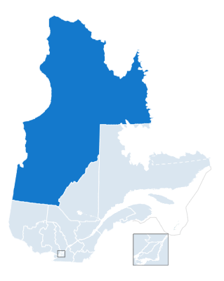

A region full of wealth
A region previously called Ungava (meaning towards the open water), Nouveau-Québec, Nord-du-Québec and now Eeyou Istchee-Baie James, our region is notorious for our various activities relating to our varied natural resources.
Our forestry, mining activities and multiple fishing lakes makes our region a unique destination to enjoy wild spaces. Year after year, we become a more notorious destination to enjoy nature. Our potential is immense.
We are just starting our journey in the touristic space with our diverse and unrivalled opportunities.
The cultural diversity within our population only adds an unparalleled richness to our region.
Our administrative region (region 10) is the largest in the province of Québec. According to the Institut de la statistique du Québec, the region counted 46,673 residents in 2021.
A few statistics
Divided in 3 regional municipalities (MRC), the region is composed mainly of 3 categories of residents
- Further in the northern end of the territory, the MRC de l'Administration Régionale de Kativik counts 14,576 residents.
- Towards the Hudson`s Bay coast as well as the western most territory, the Eeyou Istchee territory counts 18,679 residents.
- Finally, the Jamésie MRC located in the southern most part of the territory, counts 13,418 residents.
Source: Institut de la statistique du Québec
Discover the expansiveness!
The territory covers about 55% of the province. A gigantic play space for kayak enthousiasts!